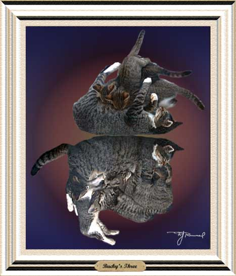

| After dinner nap. Paintage; airbrush. This is Bucky, a feral female cat we have been feeding. But then she got pregnant and brought her kittens around. Here she is shown nursing her kittens and then all napping afterwards. With three more wild cats, we decided to get them all fixed, including the feral father Satchel (capturing wild cats to do so is another story). |